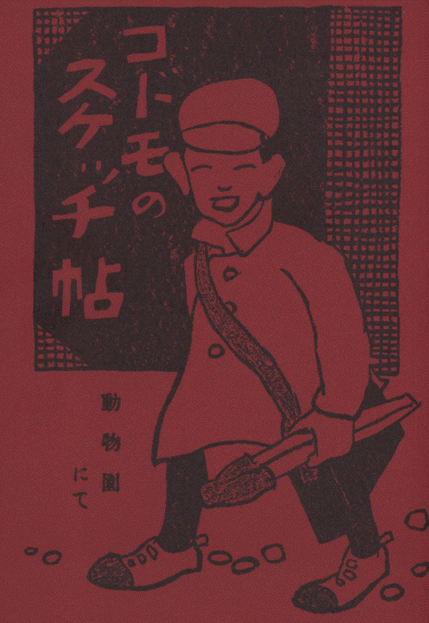
［＃改見開き］
太郎「鶴がカアカアつて啼いてるの、あれ泣いてるんですか、おぢさん」
おぢさん「泣てるんぢやない、うれしくて歌つてるんです。ほらあの雄の鶴がカアつていうとすぐ雌の鶴がカアカアつていうだろう。そら、ね。カア、カアカア、カア、カアカアつてね」
太郎「おかしいなあ、それぢや二疋で合奏してるんですねえ」
おぢさん「ほうら、また向でもはじめた」
 ［＃改見開き］
［＃改見開き］
お
山の お
山の
兎太郎さん
お
前の
耳は なぜ
長い。
枇杷の
若葉をたべたので
それゆへお
耳が
長ござる。
お
山の お
山の
兎太郎さん
何がそんなに
怖ござる。
びつくり
草ではないけれど
私は
風が
怖ござる。
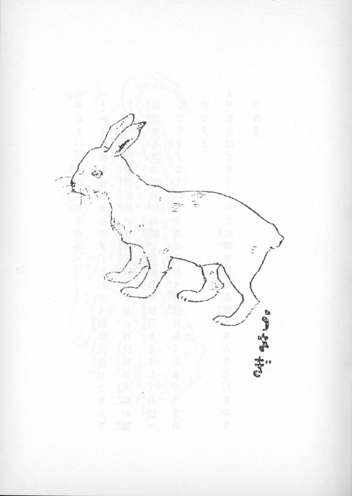
［＃改見開き］
太郎「おまへは虎の従兄なのかへ」
へう「へ

、まあそんなもんです。これでも
昔は
兄弟だつたんですがね。
加藤清正公が
朝鮮征伐にいらした
時、
私の
先祖が
道案内をしたので、そのお
礼に
清正公の
紋所をこうして
身体へつけて
下すつて
代々まあこうして
宝物にしてゐるやうなわけですよ」
太郎「なるほどそうかねえ、道理で清正の紋とおんなじだとおもつたよ」
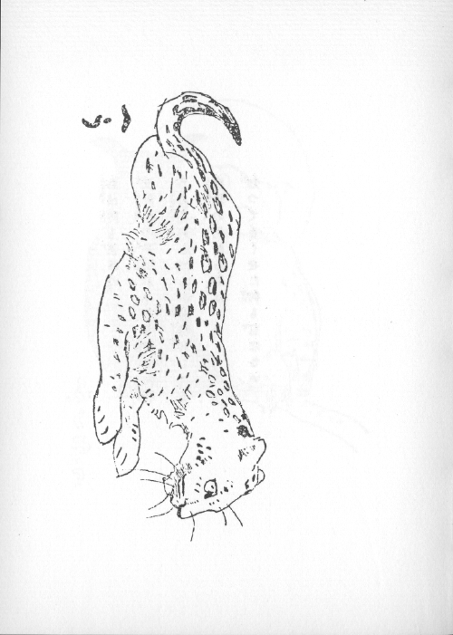
［＃改見開き］
梟は
何も
言はぬ。
世界中の
子供がみんな
眠つた
時
お
月様何してる、お
星様何してる。
夜、
眼の
見える
梟は
知つてるくせに
何も
言はない。
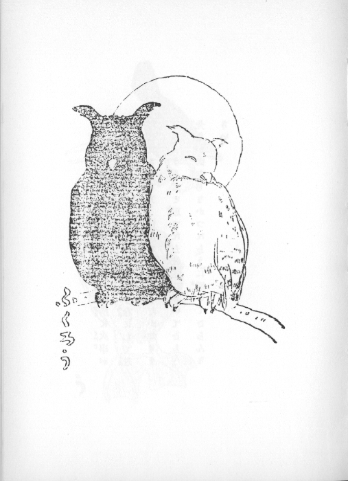
［＃改見開き］
昔、「う」のお
母さんが
子供を
産む
時、
近所に
火事があつたんで、たべかけてゐた
魚を「う
呑」にして
迯だしたさうです。ほんとだかどうだか
知りません。うそだと
思つたら
先生に
訊いてごらん。
先生が
御存じなかつたら「う」に
聴いてごらんなさい。
 ［＃改見開き］
［＃改見開き］
黒猫「おまへさんなんざあ器量は好いし、おとなしいから人に可愛がられて幸福といふものさ」
斑猫「あらまあ、あんなことを、おなじ猫でも女になんぞ生れてはつまりませんわ」
黒猫「どうしてなか／＼、私なんざあ、自分で自分の糊口をしなきやあならないんですからやりきれやせんや」
斑猫「それだから結構ですわ。夜なんかでも、あなたは毛色がお黒いから鼻の頭へ御飯粒をくつつけて口をあいてゐれば鼠さんは黒い所に白いものがあるので喜こんで食べに来ると食べられるつていふぢやございませんか。そんなことはとても私たちには出来ませんわ」
 ［＃改見開き］
雪
［＃改見開き］
雪の
降る
日は
べにす※
［＃濁点付きの二の字点、コマ10-右-2］め
紅い
木の
実が
たべたさに
そつと
出て
見る
いぢらしさ。
 ［＃改見開き］
［＃改見開き］
太郎「おぢさん狐は化しませんか」
動物園のおぢさん「私はまだ化された事はない」
太郎「おぢさん、この狐は雄と雌ですか」
おぢさん「さうです」
太郎「それぢや、狐のお嫁入の時雨が降りましたか」
おぢさん「この狐たちは動物園へ来るまへにもう嫁いりしたのです」
 ［＃改見開き］
何時来
［＃改見開き］
何時来て
見ても
泣いてゐる。
何が
悲しゆて
お
泣きやるぞ。
悲しいことはないけれど
生れ
故郷が
なつかしい。
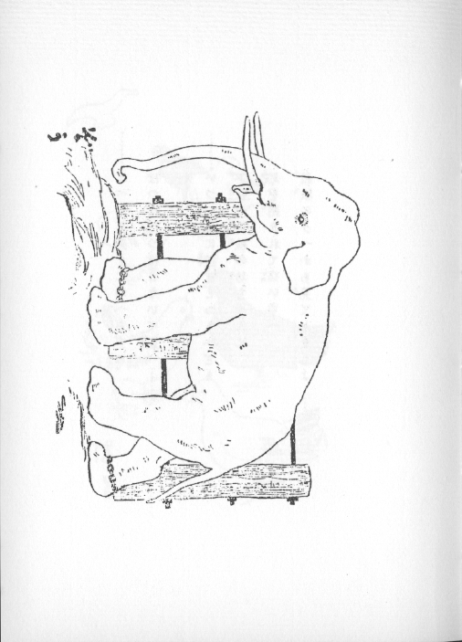
［＃改見開き］
………たべてもすぐにかへらずに
ぽつぽぽつぽとないて
遊べ………
………いつしよに
遊ぼとおもへども
下駄や
足駄の
坊ちやんに
足を
踏まれて
痛いゆへ
屋根のうへから
見てゐましよ………
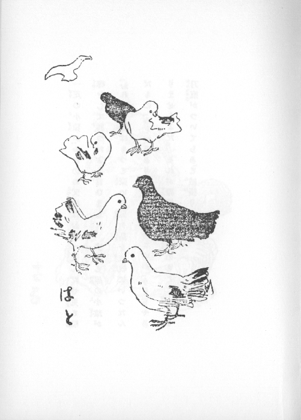
［＃改見開き］
一
疋の
小猿が「おれのお
父様はおまへ
豪んだぜ、
兎と
喧嘩をして
勝つたよ」と
言ひました。すると
他の
小猿が「おれの
父様はもつと
豪いや、
鬼ヶ
島を
征伐にいつたんだもの」「うそだあ、ありや
昔の
事ぢやないか」「うそぢやありませんよだ。それが
証拠にはお
尻のとこに
大きな
刀痕がついてらあ」と
威張りました。
 ［＃改見開き］
鶏
［＃改見開き］
鶏は
神様に
夜明を
知らせる
事を
仰付かつたのが
嬉しさに、
最初の
夜、まだお
月様がゆつくりと
空を
遊びまはつてゐるのに、
時を
作つて
啼きました。それで
朝日はびつくらして
東の
山から
出ましたので、お
月様はなごり
惜しいけれどそれきり
夜に
別れました。それからといふもの、お
月様は
怒つて
日が
暮れると、
鶏の
眼を
見えぬやうにしてしまひました。それで「とりめ」になりました。
 ［＃改見開き］
［＃改見開き］
ほつきよくぐまの おかしさは
いつきて
見ても いや／＼と
かぶりを
振つておりまする。
パンをやつても いイや いや
肉をやつても いイや いや
かぶりふり／＼
食べました。
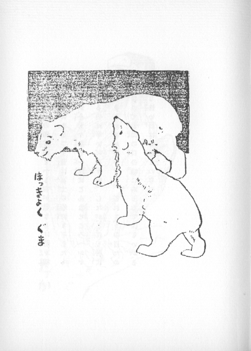
［＃改見開き］
お
婆さんの
独言「おまへも
世が
世ならば、
将軍様の
御手にとまつて、
昔は、
富士の
巻狩なぞしたものだが、
今ぢや
梟と
一所にこんなところへか※
［＃濁点付きの二の字点、コマ17-右-3］んでるのは
辛いだろうの。したが、これも
時代とあきらめるが
好いぞよ。これさ、うの
目たかの
目つて
世間の
口の
端にか
るではないか、そんな
怖い
目はせぬものぢや」
 ［＃改見開き］
［＃改見開き］
太郎「らくだよ らくだ
なんておまへはなまけものなんだろう［＃「なんだろう」は底本では「なんだろら」］。
のらくら のらくらと一日なまけてゐるではないか」
らくだ「
坊ちやん。
私が
好い
見せしめです。
あんまりなまけたので昔私の先祖は神様に撲られまして、ごらんの通り身体中瘤だらけになりました」
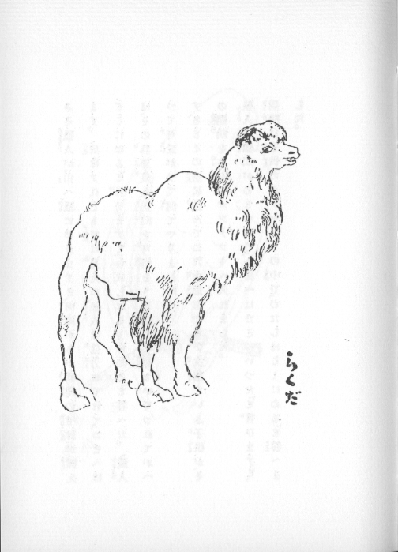
［＃改見開き］
ある
猟人が、
山［＃ルビの「やま」は底本では「ま」］へ
猟にゆきますと、
何処からか
鸚鵡の
啼声が
聞えます。
声はすれども
姿は
見えぬ、
猟人は
途方にくれて「おまへはどこにゐる」と
言ひますと「わたしはこ
にゐる」と
答へた。
猟人は、その
無邪気な
鸚鵡を
可憐そうに
思つて
撃ないでつれてかへつて
可愛がつて
飼てやりました。
するとその
辺に
住んでゐた
太郎ぢやない、
次郎といふ
子供が、その
鸚鵡を
盗んでポツケツトへ
入れました。
猟人［＃ルビの「かりうど」は底本では「りうど」］は
鸚鵡がゐないので「おまへはどこへいつた」と
言ひますと、
鸚鵡は
子供のポツケツトの
中で「わたしはこ
にゐる」と
答へました。
 ［＃改見開き］
鹿
［＃改見開き］
鹿が
小川の
水の
中に
立つて、
自分の
姿を
水に
映して
「おれの
角はなんて
美しいんだらう。だが、この
足の
細いことはどうだろう、もすこし
太かつたらなア」と
独語を
言た。そこへ
猟人が
来た。おどろいて
鹿は
迯げだした。
細い
足のおかげで
走るわ、
走るわ、よつぽど
遠くまで
迯げのびたが、
藪のかげでその
美くしい
角めが
笹に
引掛かつてとう／＼
猟人につかまつたとさ。
 ［＃改見開き］
太郎
［＃改見開き］
太郎は、エソップのなかの、
或時ライオンが
一疋の
鼠を
捕つたら、
鼠が「おぢさんわたいのやうな
小いさなものをいぢめたつてあなたの
手柄にもなりますまい」つて
言つたらライオンは「ハヽヽヽなるほどさうだ」つて
許してやつた。するとある
時、ライオンが
猟人に
捕つて
縛られたとこへ
例の
鼠が
来て「おぢさん、
待つといで」と
言つて
縛つた
縄を
噛切つてやりました。つていふ
噺を
思出して「おぢさん、ライオンは
馴たら
鼠でも
喰ひませんか」と
動物園のおぢさんに
聞きました。すると、おぢさんの
答はこうでした「すぐ
喰つちまふ」
 ［＃改見開き］
［＃改見開き］
太郎「だてふはいつも立つてばかりゐますが、夜ねる時でも立てますか」
動物園のおぢさん「夜はやつぱりしやがんで眠ります」
太郎「象は立つて眠るんでせう」
おぢさん「い
へ
象もすわつて
寝ます」
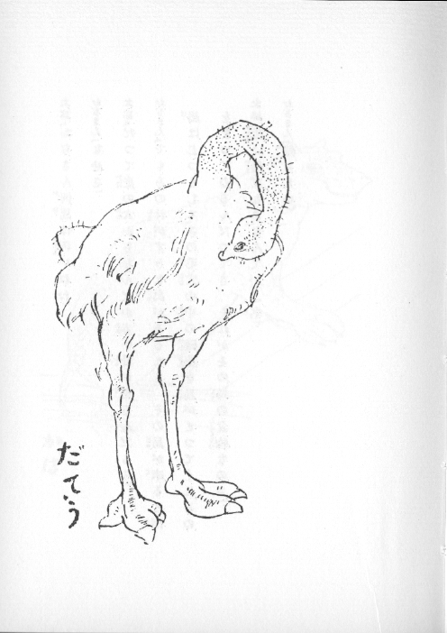
［＃改見開き］
太郎「おぢさん河馬は汚いねえ」
おぢさん「なぜさ」
太郎「だつて皮の穴からなんだか赤い汁が出るんだもの」
おぢさん「でもあの汁がすきな鳥があるとさ。その鳥が来ると河馬はじつとして、あの毛穴の中の黴菌を鳥がとつてくれるのをまつてゐるんだつてさ。それがその鳥の食物なのさ」
太郎「汚い鳥だなあ、なんていふ名」
おぢさん「知らない」
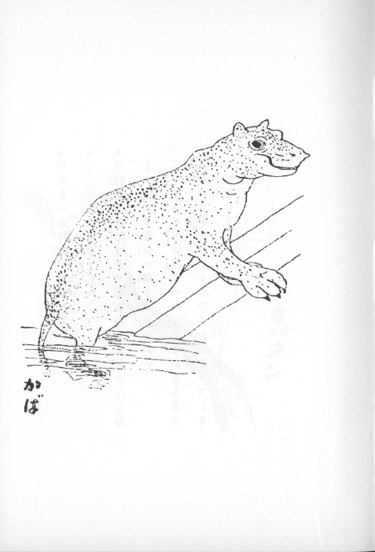
［＃改見開き］
太郎「おまへは何処から来たの」
キバタン「印度から来ました」
太郎「印度は黒坊ばかりゐるのかと思つたら、おまへのやうな白い鳥もゐるのかい」
キバタン「なあに、昔は黒かつたんですが、あんまり太陽の光がきついもんですからはげてしまつたんです」
 ［＃改見開き］
［＃改見開き］
動物園のおぢさん「ある時、白い夏服を着た巡査が、剣か何かでこの虎をおどかしたことがありました。それからといふもの白い服を着た巡査が来ると怒ります」
太郎「おぢさん、虎はよく覚えてゐますね」
おぢさん「一度そんなことがあると決して忘れません」
太郎「虎が客に向つて放尿してもおまはりさんは叱らないんですか」
おぢさん「虎がおまはりさんを叱ります」
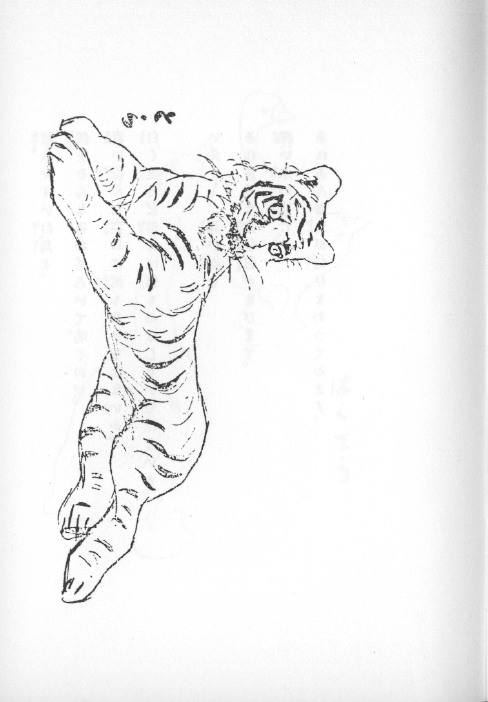
［＃改見開き］
驚きやすい
白鳥よ。
何をそんなにおどろいて
鳴くのだ。
青い
澄んだ
空には
何もないではないか
［＃「何もないではないか」は底本では「河もないではないか」］。
白く
淀んだ
沼には
何もゐはしないではないか。
いえ／＼。
青い
空を
あれ、あんな
化物雲がとびます。
深い
水の
底に、
あれ、あんな
虫が
匐ひまわつてゐます。
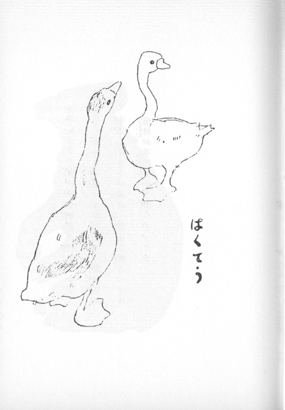
［＃改見開き］
太郎「おぢさん熊が手を合せて拝んでるよ」
おぢさん「は
あ、
可憐いものだなあ。
動物園の
中でも
夜なんか
熊が
一番よく
眠るつてね、
嚊声が
不忍池まで
聞へるつてさ」
［＃「てさ」」は底本では「てさ」］ ［＃改ページ］
［＃改ページ］
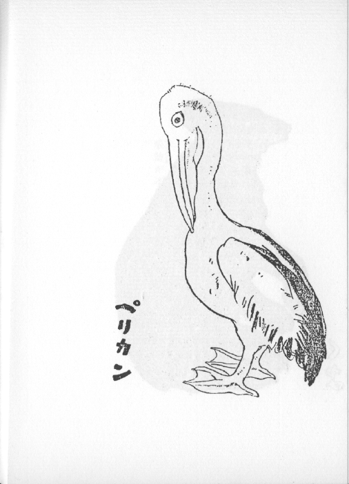
［＃改ページ］
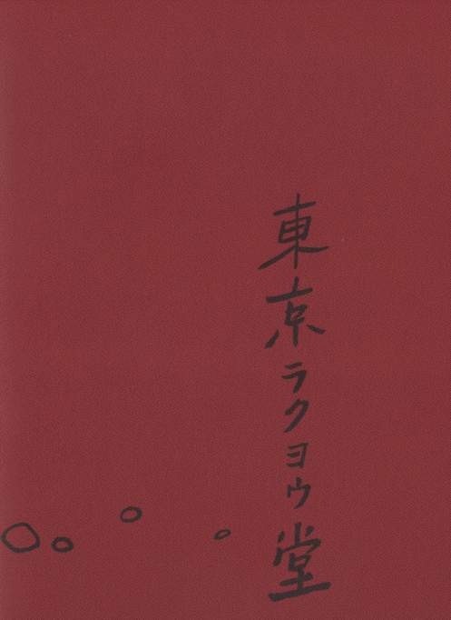